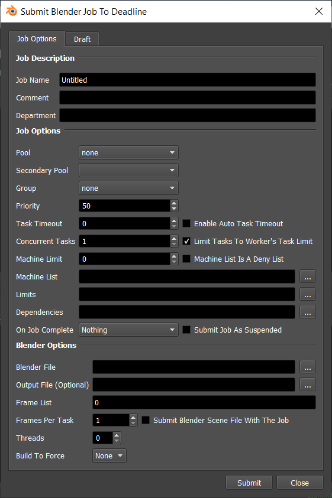
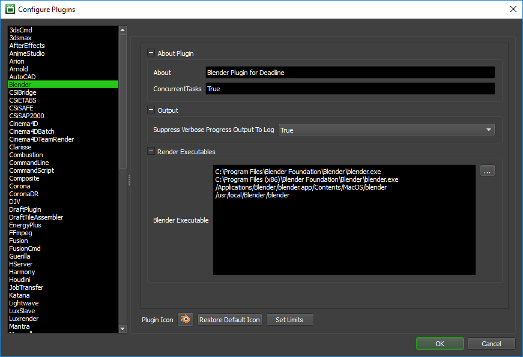

Blender¶
Job Submission¶
You can submit jobs from within Blender by installing the integrated submission script, or you can submit them from the Monitor. The instructions for installing the integrated submission script can be found further down this page.
To submit from within Blender 2.5 and later, select Render -> Submit To Deadline. For previous versions of Blender, you must submit from the Monitor.
Submission Options¶
The general Deadline options are explained in the Job Submission documentation, and the Draft/Integration options are explained in the Draft and Integration documentation. The Blender specific options are:
Threads: The number of threads to use for rendering.
Build To Force: You can force 32 bit or 64 bit rendering.
Plugin Configuration¶
You can configure the Blender plugin settings from the Monitor. While in power user mode, select Tools -> Configure Plugins and select the Blender plugin from the list on the left.
Render Executables
Blender Executable: The path to the Blender executable file used for rendering. Enter alternative paths on separate lines.
Output
Suppress Verbose Progress Output To Log: When enabled, this will prevent excessive progress logging to the Worker and task logs.
Integrated Submission Script Setup¶
The following procedures describe how to install the integrated Blender submission script. This script allows for submitting Blender render jobs to Deadline directly from within the Blender editing GUI. Note that this script only works with Blender 2.6 and later. You can submit to older versions of Blender from the Monitor.
You can either run the Submitter installer or manually install the submission script.
Submitter Installer (Blender version 2.79 and earlier)¶
Run the Submitter Installer located at
<Repository>/submission/Blender/Installers.In Blender, select File -> User Preferences…, and then select the Add-Ons tab.
Click on the Render filter on the left, and check the box next to the Render: Submit Blender To Deadline add-on.
Manual Installation (Blender version 2.79 and earlier)¶
In Blender, select File -> User Preferences…, and then select the Add-Ons tab.
Click the Install Add-On from File… button at the bottom, browse to
[Repository]\submission\Blender\Client, and select the DeadlineBlenderClient.py script. Then press the Install Add-On from File… button to install it.Then click on the Render filter on the left, and check the box next to the Render: Submit Blender To Deadline add-on.
After closing the User Preferences window, the Submit To Deadline option should now be in your Render menu.
Submitter Installer (Blender version 2.80 onward)¶
Run the Submitter Installer located at
<Repository>/submission/Blender/Installers.In Blender, select Edit -> Preferences…, and then select the Add-Ons tab on the left.
Click on the Render filter in the dropdown along the top, and check the box next to the Render: Submit Blender To Deadline add-on.
Manual Installation (Blender version 2.80 onward)¶
In Blender, select Edit -> Preferences…, and then select the Add-Ons tab on the left.
Click the Install… button in the top right corner, browse to
[Repository]\submission\Blender\Client, and select the DeadlineBlenderClient.py script. Then press the Install Add-on from File… button to install it.Then click on the Render filter in the dropdown along the top, and check the box next to the Render: Submit Blender To Deadline add-on.
After closing the Preferences window, the Submit To Deadline option should now be in your Render menu.
FAQ¶
Which versions of Blender are supported?
Blender versions 2.60 through 2.80 are currently supported.
Error Messages And Meanings¶
This is a collection of known Blender error messages and their meanings, as well as possible solutions. We want to keep this list as up to date as possible, so if you run into an error message that isn’t listed here, please visit the Thinkbox Help Centre and let us know.
Warning: This script was written Blender version 2.80.0 and might not function (correctly), though it is enabled
You may encounter this warning when enabling the Submission Script in pre-2.80.0 versions of Blender. Our latest version of the script is targeted to Blender 2.80.0, however, it remains fully compatible with versions as far back as 2.60.0.

{kind=link}
{kind=link}
{kind=link}
{kind=link}
{kind=link}
{kind=link}
{kind=link}
{kind=link}